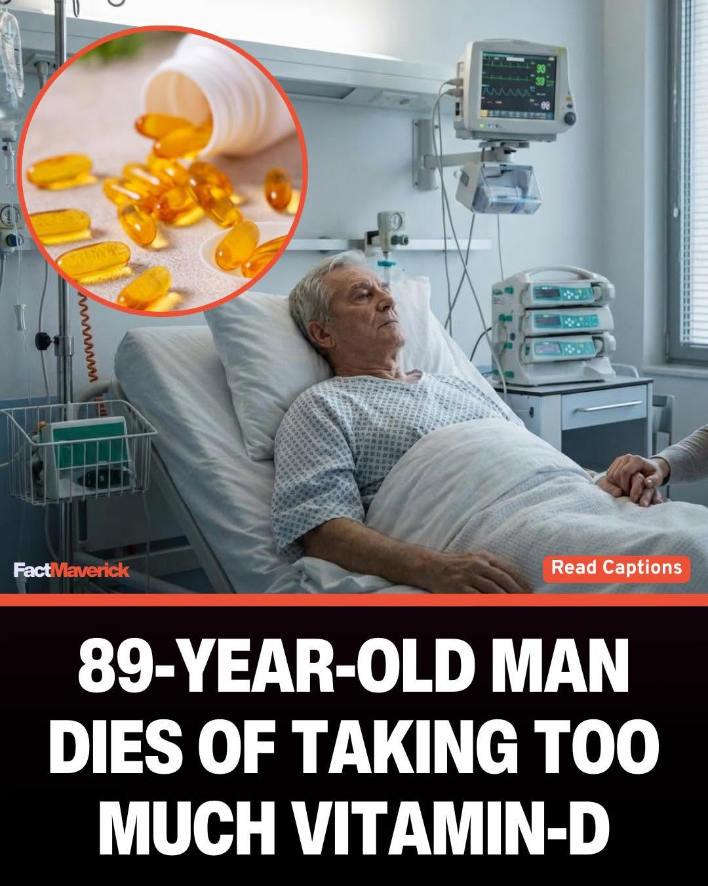

Vitamin D overdose caused fatal hypercalcemia in an 89-year-old, UK coroner warns
Louis notes severe hypercalcemia can cause cardiac arrest, coma or kidney failure. The shared story reports a UK coroner's warning after an 89-year-old died of vitamin D toxicity after nine months of supplements.